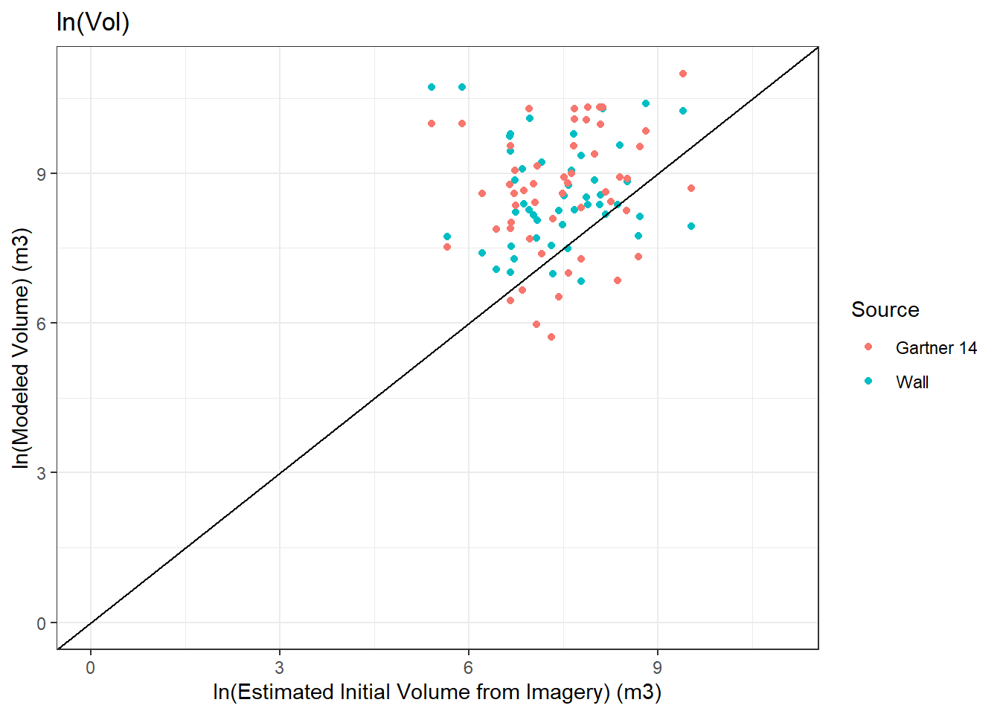
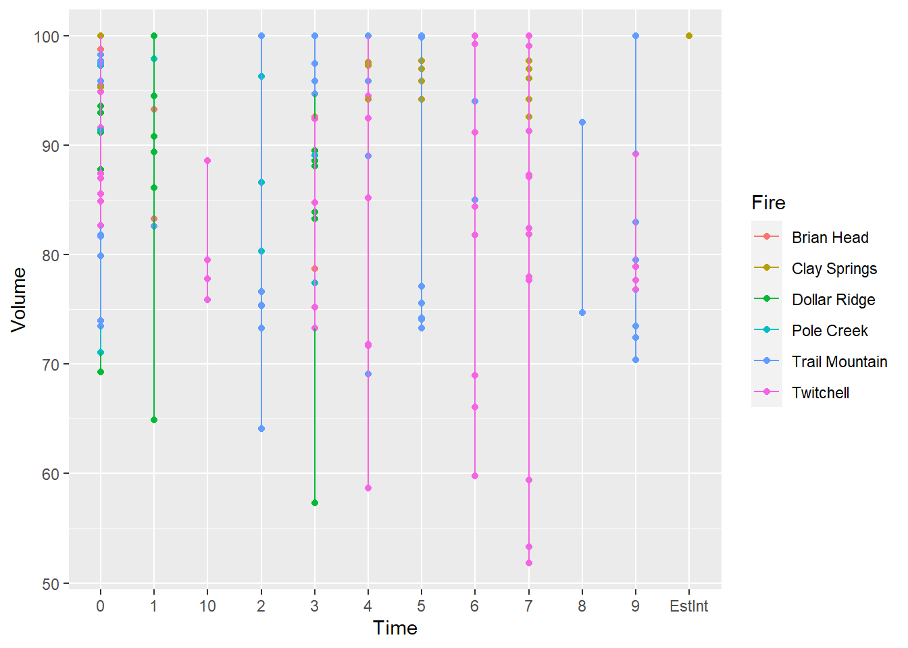
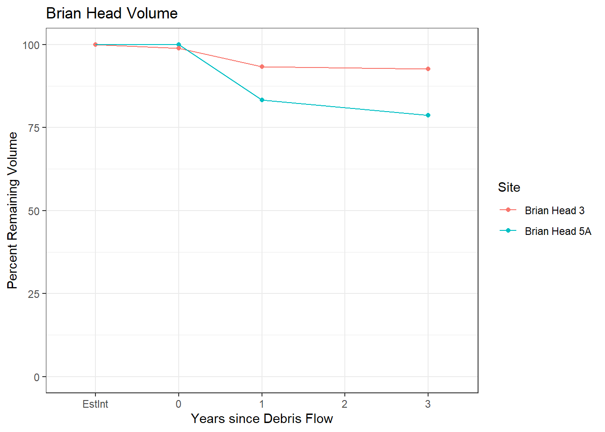
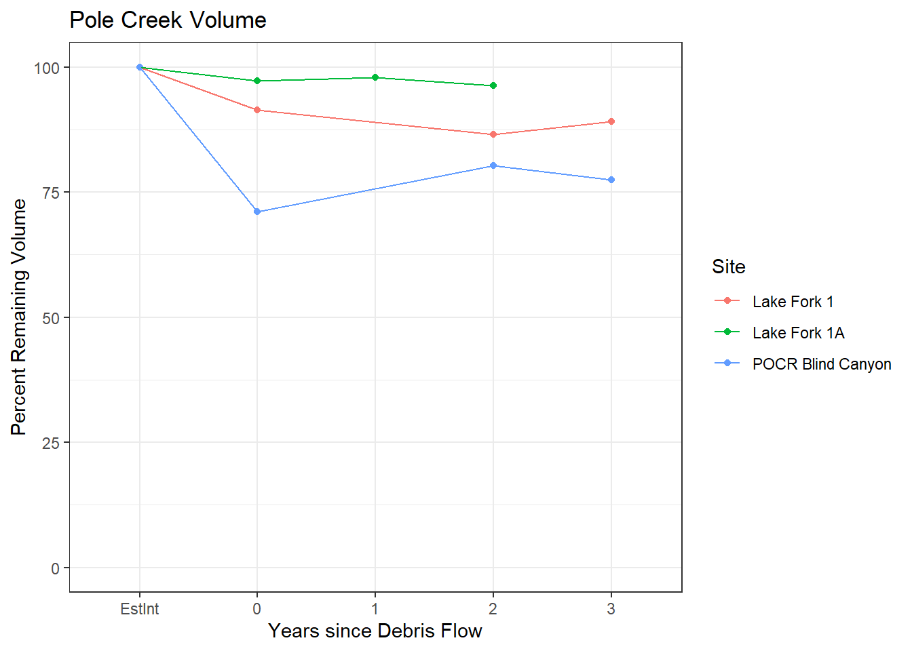
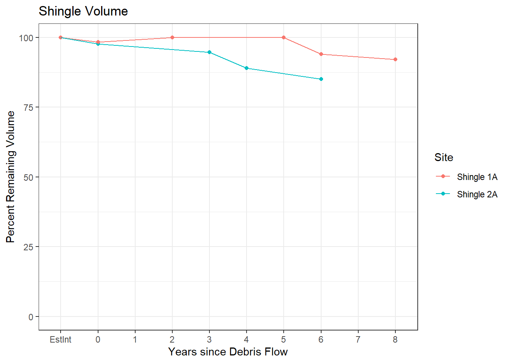
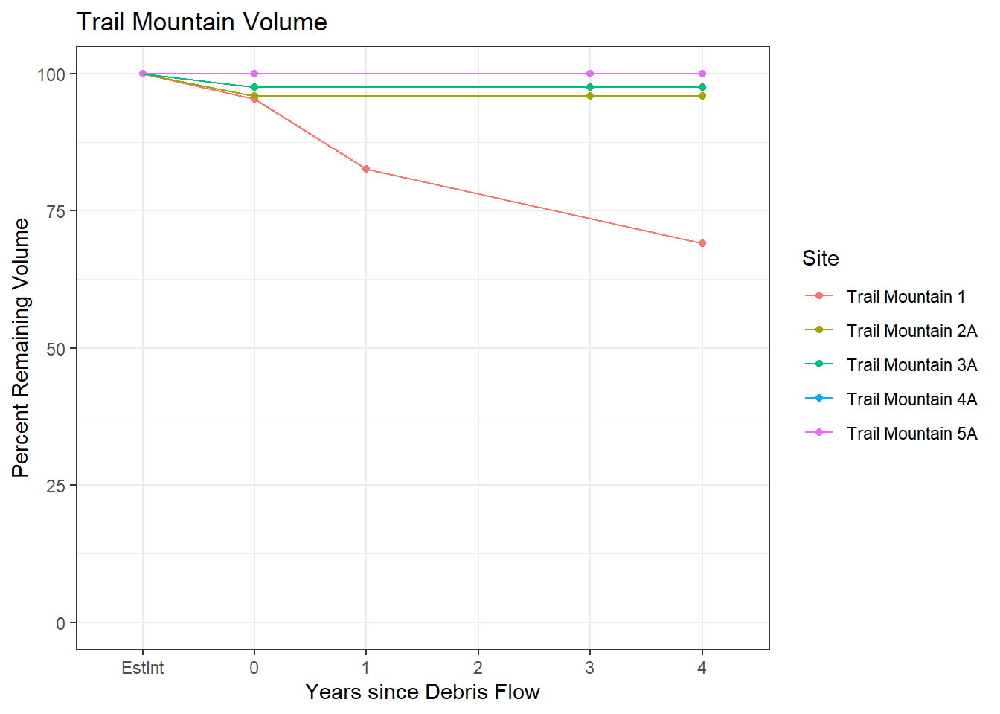
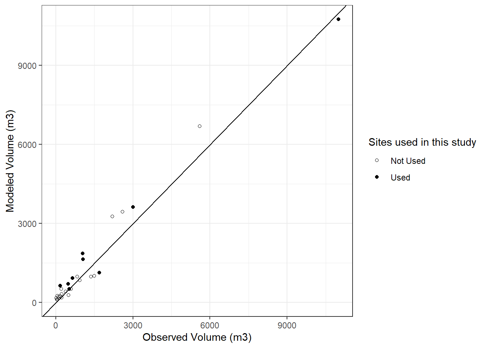
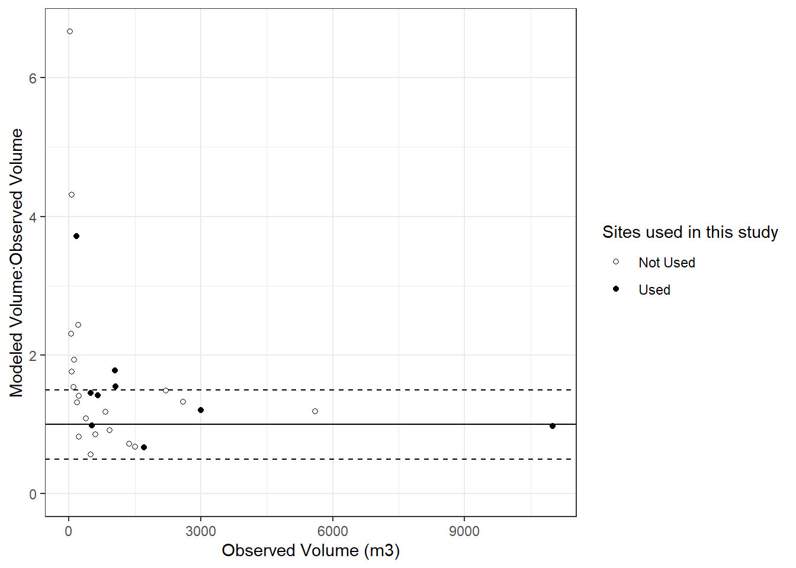
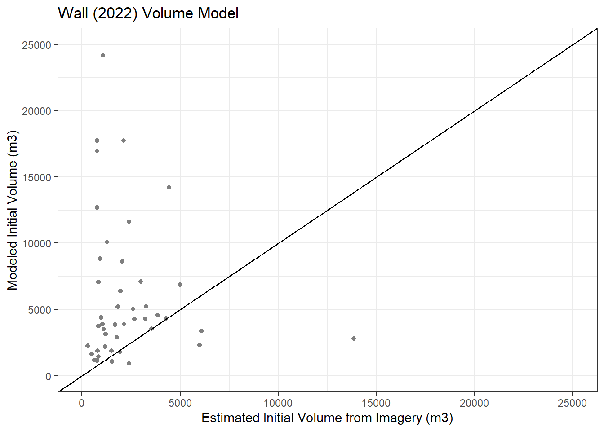

Chapter 3 Volume Plots
Building the volume plots for debris flow volume over time
3.1 Read the CSV
## Site EstInt t_0 t_1 t_2 t_3 t_4 t_5 t_6 t_7
## 1 Brian Head 5A 1537.700 1537.700 1281.108 NA 1210.232 NA NA NA NA
## 2 Brian Head 3 3267.823 3230.050 3049.005 NA 3026.695 NA NA NA NA
## 3 Dollar Ridge 1A 13846.132 12873.775 12376.495 NA 12197.908 NA NA NA NA
## 4 Dollar Ridge 2A 1128.266 1056.268 1104.269 NA 999.490 NA NA NA NA
## 5 Dollar Ridge 3A 5982.974 5982.974 5982.974 NA 5982.974 NA NA NA NA
## 6 Dollar Ridge 4A 3861.250 3388.531 3322.835 NA 3217.984 NA NA NA NA
## t_8 t_9 t_10
## 1 NA NA NA
## 2 NA NA NA
## 3 NA NA NA
## 4 NA NA NA
## 5 NA NA NA
## 6 NA NA NA3.1.1 Edit the column names and create new percent table object
colnames(gross_sum_tdf) = c('Site','EstInt', '0', '1','2','3','4','5','6','7','8','9','10')
gross_sum_t_perc = gross_sum_tdf3.1.2 change the percent the EstInt column (2) to 100%
gross_sum_t_perc[,2] = 100Get percent change
l1 = list(3:13)#number of columns
for (i in l1){
gross_sum_t_perc[,i] = round((gross_sum_tdf[,i]/gross_sum_tdf[,2]*100),1)
}I will have to subset the multiple debris flow events into seperate objects to plot them as seperate lines, so remove the rows with those sites
gross_sum_t_perc = gross_sum_t_perc[-c(14:21, 23),] ## the sites are only in one fire, so this is easy to remove with indexing3.1.3 Extract the debris flows per fire for seperate plots
brian_head = gross_sum_t_perc[(1:2),]
dollar_ridge = gross_sum_t_perc[(3:10),]
twitchell = gross_sum_t_perc[(11:22),]
pole_creek = gross_sum_t_perc[(23:25),]
seeley= gross_sum_t_perc[(26:31),]
shingle= gross_sum_t_perc[(32:33),]
trail_mountain = gross_sum_t_perc[(34:38),]
clay_springs = gross_sum_t_perc[39:43,]3.2 subsetting sites with multiple debris flows
twitchell_FC4 = gross_sum_tdf[14,]
twitchell_FC5_1 = gross_sum_tdf[15,]
twitchell_FC5_2 = gross_sum_tdf[17,]
twitchell_FC7_1 = gross_sum_tdf[16,]
twitchell_FC7_2 = gross_sum_tdf[19,]
twitchell_SC2 = gross_sum_tdf[17,]new percents for subset sites
perc_FC4_1 = twitchell_FC4
perc_FC4_1[,2] = 100
perc_FC5_1 = twitchell_FC5_1
perc_FC5_1[,2] = 100
perc_FC5_2 = twitchell_FC5_2
perc_FC5_2[,2] = 100
perc_FC7_1 = twitchell_FC7_1
perc_FC7_1[,2] = 100
perc_FC7_2 = twitchell_FC7_2
perc_FC7_2[,2] = 100
perc_SC2 = twitchell_SC2
perc_SC2[,2] = 100for (i in l1) {
perc_FC4_1[,i] = round((twitchell_FC4[,i]/twitchell_FC4[,2]*100),1)
perc_FC5_1[,i] = round((twitchell_FC5_1[,i]/twitchell_FC5_1[,2]*100),1)
perc_FC5_2[,i] = round((twitchell_FC5_2[,i]/twitchell_FC5_2[,2]*100),1)
perc_FC7_1[,i] = round((twitchell_FC7_1[,i]/twitchell_FC7_1[,2]*100),1)
perc_FC7_2[,i] =
round((twitchell_FC7_2[,i]/twitchell_FC7_2[,2]*100), 1)
perc_SC2[,i] = round((twitchell_SC2[,i]/twitchell_SC2[,2]*100),1)
}3.2.1 pivot longer (t for tibble)
library(magrittr) #for piping
library(tidyr) #for tibble##
## Attaching package: 'tidyr'## The following object is masked from 'package:magrittr':
##
## extractlibrary(ggplot2) #for plotting
brian_head_t = brian_head %>% pivot_longer(cols = EstInt:'10' , names_to = 'Time', values_to = 'Volume')
dollar_ridge_t = dollar_ridge %>%pivot_longer(cols = EstInt:'10' , names_to = 'Time', values_to = 'Volume')
twitchell_t = twitchell %>% pivot_longer(cols = EstInt:'10', names_to = 'Time', values_to = 'Volume')
pole_creek_t = pole_creek %>% pivot_longer(cols = EstInt:'10' , names_to = 'Time', values_to = 'Volume')
seeley_t = seeley %>% pivot_longer(cols = EstInt:'10' , names_to = 'Time', values_to = 'Volume')
shingle_t = shingle %>% pivot_longer(cols = EstInt:'10' , names_to = 'Time', values_to = 'Volume')
clay_springs_t = clay_springs %>% pivot_longer(cols = EstInt:'10' , names_to = 'Time', values_to = 'Volume')
trail_mountain_t = trail_mountain %>% pivot_longer(cols = EstInt:'10' , names_to = 'Time', values_to = 'Volume')
gross_sum_t_perc_t = gross_sum_t_perc %>% pivot_longer(cols = EstInt:'10' , names_to = 'Time', values_to = 'Volume')
gross_sum_t_perc_t$Fire = NA
perc_FC4_t = perc_FC4_1 %>%pivot_longer(cols = EstInt:'10' , names_to = 'Time', values_to = 'Volume')
perc_FC5_1_t = perc_FC5_1 %>% pivot_longer(cols = EstInt:'10' , names_to = 'Time', values_to = 'Volume')
perc_FC5_2_t = perc_FC5_2 %>% pivot_longer(cols = EstInt:'10' , names_to = 'Time', values_to = 'Volume')
perc_FC7_1_t = perc_FC7_1 %>% pivot_longer(cols = EstInt:'10' , names_to = 'Time', values_to = 'Volume')
perc_FC7_2_t = perc_FC7_2 %>% pivot_longer(cols = EstInt:'10', names_to = 'Time', values_to = 'Volume')
perc_SC2_t = perc_SC2 %>% pivot_longer(cols = EstInt:'10' , names_to = 'Time', values_to = 'Volume')3.2.2 Add in fire name
gross_sum_t_perc_t[c(1:24),4] = 'Brian Head'
gross_sum_t_perc_t[c(25:120),4] = 'Dollar Ridge'
gross_sum_t_perc_t[c(121:264),4]= 'Twitchell'
gross_sum_t_perc_t[c(265:300),4] = 'Pole Creek'
gross_sum_t_perc_t[c(301:372),4] = 'Seeley'
gross_sum_t_perc_t[c(373:396),4] = 'Shingle'
gross_sum_t_perc_t[c(297:456),4] = 'Trail Mountain'
gross_sum_t_perc_t[c(457:516),4] = 'Clay Springs'
perc_FC4_t$Fire = 'Twitchell'
perc_FC5_1_t$Fire = 'Twitchell'
perc_FC5_2_t$Fire = 'Twitchell'
perc_FC7_1_t$Fire = 'Twitchell'
perc_FC7_2_t$Fire = 'Twitchell'
perc_SC2_t$Fire = 'Twitchell'3.2.3 plots
## geom_path: Each group consists of only one observation. Do you need to adjust
## the group aesthetic?
## geom_path: Each group consists of only one observation. Do you need to adjust
## the group aesthetic?
## geom_path: Each group consists of only one observation. Do you need to adjust
## the group aesthetic?
## geom_path: Each group consists of only one observation. Do you need to adjust
## the group aesthetic?
## geom_path: Each group consists of only one observation. Do you need to adjust
## the group aesthetic?
## geom_path: Each group consists of only one observation. Do you need to adjust
## the group aesthetic?
# {r, eval = T, echo = F} # gross_vol_all = ggplot(data = na.omit(gross_sum_t_perc_t), aes(Time, Volume, color = Site, group = Site)) + geom_point() + geom_line() + ggtitle('Estimated Percent Volume over Time') + xlab('Time Since Debris Flow (Years)') + ylab('Percent Remaining Volume') + ylim(0,100) + scale_x_discrete(limit = c('EstInt','0', '1','2','3','4','5','6','7','8','9','10')) + theme_bw() + geom_line(data= na.omit(perc_FC5_1_t)) + geom_line(data= na.omit(perc_FC5_2_t)) + geom_line(data= na.omit(perc_FC7_t)) + geom_line(data = na.omit(perc_SC2_t)) +geom_line(data = na.omit(perc_FC4_t)) + geom_point(data = na.omit(perc_FC5_1_t)) + geom_point(data= na.omit(perc_FC5_2_t)) + geom_point(data= na.omit(perc_FC7_t)) + geom_point(data = na.omit(perc_SC2_t)) + geom_point(data = na.omit(perc_FC4_t)) # gross_vol_all #
Gross Volume All

## Saving 7 x 5 in image
## Saving 7 x 5 in imageTwitchell Fire

## Saving 7 x 5 in imageBrian Head Fire
## Warning: Removed 16 rows containing missing values (geom_point).
## Saving 7 x 5 in image## Warning: Removed 16 rows containing missing values (geom_point).Dollar Ridge Fire

## Saving 7 x 5 in imagePole Creek Fire

## Saving 7 x 5 in imageSeeley Fire
## Saving 7 x 5 in imageShingle Fire
## Saving 7 x 5 in imageClay Springs Fire

## Saving 7 x 5 in imageTrail Mountain Fire 
## Saving 7 x 5 in image3.3 Volume Compare Plots
## Site obs_vol initial_vol_est obs_vol_low obs_vol_high X2020_reg
## 1 Brianhead 1 65 97.5 73.125 131.625 114.4951
## 2 Brianhead 2 500 625.0 468.750 843.750 283.9000
## 3 Brianhead 3 1500 1800.0 1350.000 2430.000 1009.5000
## 4 Brianhead 4 380 532.0 399.000 718.200 411.4000
## 5 Clay Springs 1 1050 1522.5 1141.875 2055.375 1866.0480
## 6 Clay Springs 2 170 187.0 140.250 252.450 631.9028
## int_reg int_vol_Wall
## 1 NA NA
## 2 1837.290 2287.9
## 3 3267.823 1022.9
## 4 753.100 1112.7
## 5 NA NA
## 6 NA NA## Warning: Ignoring unknown parameters: yintercept
## Saving 7 x 5 in image
## Saving 7 x 5 in image